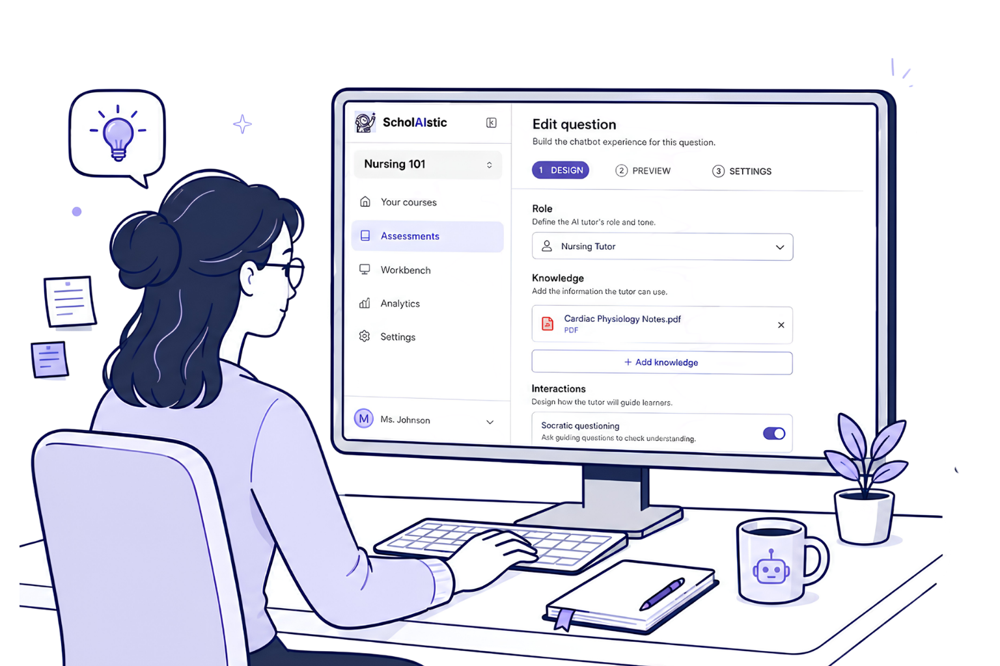
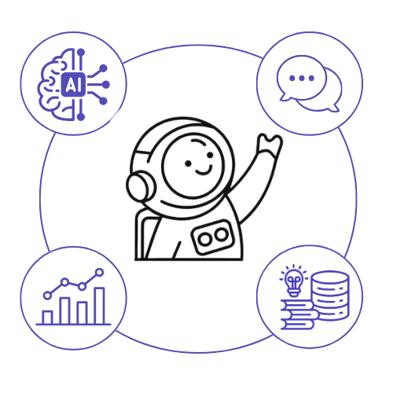
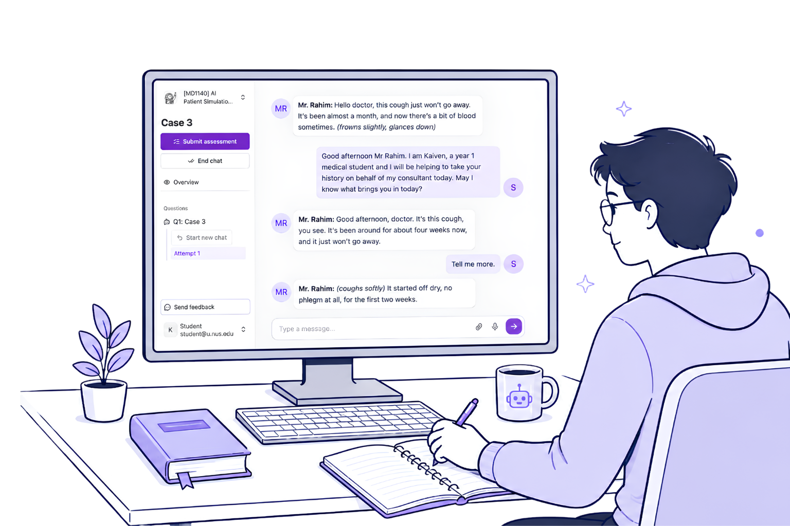

AT NUS, PEDAGOGY COMES FIRST.
We begin with what students need to learn and practise,
then design the AI around that.
PEDAGOGY FIRST

EDUCATORS DECIDE
What students practise
How the AI responds
What counts as success
learning design
visibility & insights

AI models
Modalities
Analytics
Knowledge
SCHOLAISTIC ENABLES
Turns pedagogical intent into a structured AI learning experience.
practice & feedback
interaction evidence

STUDENTS PRACTISE
Work through the task
Explain their reasoning
Act on the feedback
Every interaction becomes visible to educators.
LEARNING DESIGN IN ACTION
NUS Medicine | AI Patient Simulation
THE TEACHING CHALLENGE
How can every student practise history-taking and clinical reasoning when faculty cannot observe every encounter?
01 AI PATIENT
Gather the history
02 AI CONSULTANT
Reason through the case
03 FEEDBACK
Receive personalised feedback
Gather the history
Reason through the case
Receive personalised feedback
The patient reveals information only in response to the questions students ask.
The AI consultant prompts students to explain their reasoning and consider alternatives.
The AI evaluates the full interaction against a faculty-designed rubric.
LEARNING DESIGN IN ACTION
NUS Computing | Leadership Coaching Simulation
THE TEACHING CHALLENGE
How can students pause, reflect and adapt while a difficult conversation is still unfolding?
Leadership requires reflection, but reflection often happens only after the moment has passed.
01 PRACTISE
Coach an AI employee through a difficult conversation.
02 PAUSE AND REFLECT
Step back, examine the interaction and decide what to try next.
03 RETURN AND APPLY
Resume the conversation with a revised approach.
ACROSS NUS AND BEYOND
Different learning goals require different learning designs.
NUS LAW
Cross-examine an AI witness
NUS DENTISTRY
Interpret radiographs with an AI tutor
NUS SOCIAL WORK
Build rapport with an AI client
Since 2024, NUS educators have used ScholAIstic to create AI-enabled learning experiences around distinct teaching and learning needs.
3,600+
students
30+
courses
14
faculties and schools
Designed by educators. Enabled through ScholAIstic.
BEYOND NUS
Collaborations with schools, universities and public-sector agencies in Singapore and internationally, to share pedagogy-first AI learning design.
CONTINUING TO BUILD WITH EDUCATORS
We continue to build with educators, extending the kinds of learning experiences they can create.
MULTIMODAL
Practise in the mode the skill requires
Voice, images and documents bring learning closer to real professional contexts.
MULTI-USER
Learn with people and AI together
Students, educators and AI roles can participate in the same live activity.
MULTI-AGENT
Design richer, multi-role experiences
Connect multiple AI roles, stages and feedback within one activity.
LEARNING ANALYTICS
Turn interaction data into teaching insight
See learning patterns, identify difficulties and target support more effectively.
Technology opens new possibilities.
Educators turn them into purposeful learning.
PEDAGOGY FIRST